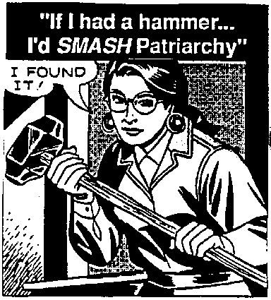

Feminism & Resistance to White Supremacy in Worker Organizing: Reflections from the IWW Centenary
Submitted on Sat, 12/17/2005 - 12:47am
Disclaimer - The following article is reposted here because it is an issue with some relevance to the IWW. The views of the author do not necessarily agree with those of the IWW and vice versa.
By Tamara - From Bring The Ruckus.
In June, I had the opportunity to attend the IWW Centenary in Chicago, two days of panels and lectures. About 200 people attended, and the first day was spent in lectures and panels discussing theory and history of working class issues and organizing; the second day was spent hearing about current reports of on-the-ground organizing work. I went primarily interested in questions of feminist praxis (theory and practice) and analysis of and resistance to white supremacy in workplace organizing. Here, I’ve included my initial questions and reflections that emerged from the experience.
What is the working class, or what are the ‘working classes’?
This question has long been stated as a question to grapple with. Specifically this came up in two manners. The first, in a recorded presentation by Mumia Abu-Jamal, as he spoke of the largest growing sector of the economy, that of service workers. The SEIU is now the largest union. Service workers typically do work that has been traditionally women, traditionally unwaged. Though now some of this work is being done by men (often immigrant men and men of color) it has still created a ‘sub-class’ of workers. So not only is the working class divided by race, but by gender and ideas of ‘feminized’ work as well. This has been called the ‘housewiferization’ of labor.
The second time this question came up was the following week during an organizing meeting. During the meeting, one person was talking about organizing opportunities on a particular job-site. After careful discussion of his three co-workers (male) he suddenly remembered he had forgotten to include a dispatcher who worked separately in an office by herself. To explain the omission, he stated ‘well, she’s not really working-class. Her background is working in call-centers and offices.’ He was challenged by another worker saying ‘call center workers are working class’ to which he replied ‘yeah, but you all know what I mean. She talks differently; she’s just different than us guys here on the floor.’
More thoughts about this...
In a changing economy, with a rapidly growing service sector creating a ‘subclass’ of workers, and the growth of a class of dead-end clerical jobs (previously considered ‘white collar’ clerks, and therefore not really working class), what does this mean for strategies of worker organizing that have previously defined ‘working class’ as point-of-production industrial workers?
In addition, we have a class of very low-paid immigrant laborers with or without legal documentation (another subclass of workers working even minimum rights by law by so-called ‘legal’ workers) working in a number of industries from feminized service work (housekeepers) to agricultural work (food pickers) to food production and factory work. This class of workers is most vulnerable to police, INS, border cops, and at times can be the most militant sector of workers, having the least to gain by the current economic system and often emerging from cultural and political traditions with a history of struggle.
It was asked at the conference, if strategies have previously been focused on dealing a blow to capital by stopping production, focused then on point-of-production workers and those workers transporting goods; how then do we make sense of the growth of these other sectors of low-wage, often women and immigrant workers? How does our strategy change to incorporate large numbers of workers excluded from point-of-production work? Also, how does a strategy originating in and focusing on workers in urban centers relate to workers in rural areas, where food is grown (or should be grown—if it’s not being grown by even lower-waged agricultural workers in other countries)? Though we may choose to promote a strategy that is urban-centered, we need to ask ‘where will our food come from?’ and how are the organizing efforts of rural workers part of this larger strategy?
Is our strategy limited to that of developing capacity to stop production and dealing a financial blow to capital? Or are we building or promoting a vision of a broad social movement that has capacity to organize all sectors of the working class possible, including those sub-sectors of workers often ignored by traditional ‘stop production’ organizing?
Which raises the question: is anyone, today, arguing for a strategy that is based specifically on point-of-production workers, and is anyone insisting on defining the working class as limited to industrial workers?
As I attended the conference with a friend, this conversation provoked the suggestion that instead of asking ‘what is the working class?’ we should consider asking the question, as they do in England, ‘what are the working classes?’.
The second day of the conference, I saw presentation by the South Street Workers in Philadelphia, who are organizing an entire street of workers in the series of strip malls on South Street, grappling with the challenges of organizing a multiracial and multicultural workforce, some who are undocumented; and pushing the boundaries of organizing out of the ‘union hall’ to the community by organizing social events, walk-in medical clinic days, and tax-preparation help. In this way, they are taking seriously the task of building and strengthening a working class culture as a preliminary step towards building a union. They seem to recognize the forces at play that might impede workers from being willing to organize consciously, and they open their events to all workers, not just those who have joined the union. At this time, they are grappling with the implications of that, and determining if it is still an effective practice or if they need to begin ‘members only’ events to strengthen membership and whether it is time yet to do a membership drive. Yet they remain committed to supporting the strengthening of the working class culture on that street, not just those workers who have signed the union card.
I cite this as an effective example of folks grappling with the ideological reality of today. We do not live in a country or a time that is friendly to unions or the working class self-defining itself. You can see this by the number of clearly working class folks, working dead-end jobs and living paycheck to paycheck who still identify themselves as ‘middle class’. It seems that only within leftist circles is it a positive thing to identify as ‘working class’. We live in the aftermath of 50 or so years of anti-communist propaganda and fear. We live in a time when the percentage of workers who are part of unions is very small (less than 13%, I think), and most of those unions are not spaces to build working class culture or to empower people to take their lives and work into their own hands. While there is lots of workplace struggle, there is not a powerful movement of workers who are pushing at the ideological forces of repression in the country and carving out space for unorganized workers to say ‘hey—maybe taking collective action against the boss is a good idea for us.’ Of course this happens anyway, but in much more isolated circumstances, on a smaller scale.
So, these are all reasons that the South Street Workers, by organizing a street of low-wage retail and service workers and consciously building working class culture, seem to be responding to the ideological state of the country today. Similar projects seem to be emerging, with organizing by street in Brooklyn, a bilingual and bicultural project called ‘Make the Road by Walking’, focused particularly on the struggles of undocumented workers. Through community support, they have gained thousands of dollars in back-pay to immigrant workers who had been paid less than $3 an hour due to their vulnerable immigration status. And a woman spoke of an emerging project that is street based, I believe in Wisconsin.
Based partly on this, I believe when we talk of the working class, we are not limiting ourselves to the organization of industrial workers; but the language and theory people use to talk about the working class reflects confusion about this. Articles written by Martin Glaberman focus on point-of-production factory workers, and I often have difficulty translating the ideas directly to apply them to other sectors. And the assumptions made (for example by the young organizer looking at the men in his warehouse) still tend to limit ‘working class’ on the basis of industrial work. Since many types of industrial work have typically excluded women, this means that tied to this particular definition ‘working class’ is the expectation that this ‘working class’ be male, displaying cultural habits and attitudes of those men traditionally working in this sector. This is true even if we know it is not the reality and can cite examples of important actions organized by women workers. This bias adversely impacts our organizing, and we need to challenge it directly, in our organizing and in our written analysis.
If we recognize that historically women’s labor has been unwaged and outside the capitalist economic system (though often essential to upholding it), then we begin to understand why when women have entered the labor force, sometimes doing similar work, this is still viewed as ‘outside’ the system. This idea has made women’s labor peripheral to both the upholding of the system (through workers doing their jobs like the bosses like) and also the destruction of the system (by workers refusing to do their jobs, or by insisting they will do their jobs as they see fit).
So, it is important that in our analysis of worker struggles, we do not fall into the same trap of seeing this type of work as merely incidental or ‘unstrategic’ because it has traditionally been invisible or unwaged. Not to say that this low-paid service sector is not capable of dealing a blow to capitalism.. But if large sectors of women and immigrant workers fall outside the sectors that are deemed ‘strategic’ to organize, could it mean that our strategy is inadequate to meet the reality of today’s workers?.
Glabermans’s idea of ‘the action of workers precedes consciousness’?
The most pertinent challenge to Glaberman’s idea came from a recorded presentation by Mumia Abu-Jamal. I do not have his direct quote, but he said more-or-less ‘yes, but surely some kind of consciousness precedes action’, and cited, as a challenge, examples of white workers choosing to organize to exclude Black workers from their shop. Yes, this is an example of consciousness, but the consciousness of being White, not the consciousness of being a worker.
Clearly it is not enough to say ‘action precedes consciousness’, but we need to grapple with what kind of consciousness exists that makes workers take action. Glaberman states that it is the alienation the point-of-production worker experiences that directly causes workers to take action and align themselves with their fellow-workers. He explains it as a ‘natural’ phenomenon. I am not convinced this is enough of an explanation, or if it once was true if it still is. Or, if it is ‘natural’, what are the ‘unnatural’ forces that impede this alignment between workers? Clearly there are examples of this.
The factory Glaberman describes is in many ways different than any job I have worked (ranging from agricultural work and fast food in high school to waitressing and service work, to dead-end paper pushing, and eventually teaching) and so clearly I have not yet worked in a factory. Every job I have worked, workers experienced some degree or another of alienation, and had some level of awareness of the contradictions in their situation. But it always seemed like there are a lot of forces impeding impulses for the direct action of workers to determine the conditions of their work. Clearly, the impulses for self-determination are always there; but there are other forces at play—of course including the constant surveillance of workers, and the sense of scarcity that at any moment any worker can be replaced. To me, this explains why white workers might choose to organize based on whiteness (knowing the boss is usually white) rather than being workers; they know that under the system of white supremacy, they stand to gain rather than lose. White supremacy poses a serious threat to worker-solidarity, particularly since it often works—for the white worker.
‘Cross-race solidarity’ vs. the destruction of white supremacy:
During the weekend, there was a certain amount of talk about cross-race solidarity between workers. Staughton Lynd spoke of this solidarity among men in prisons, particularly the rebellion at the Ohio State Penitentiary in Lucasville, I believe in 1993. Characterized by an unusual alliance between Black Muslims and members of the Aryan Nations, Lynd has cited this as an example of solidarity across racial lines to confront the system oppressing all prisoners. While clearly, cross-race solidarity is one important component of multi-racial organizing and confronting white supremacy, I am uneasy with this example being held up as cross-race solidarity.
For the members of Aryan Nations, it was no contradiction to their political beliefs to align themselves with the Black Muslims, as it was in their direct interest in opposing their conditions. While on a practical level, the result of this was a challenge to the prison system; this is not a clear-cut example of cross-race solidarity. So, Lynd raised the question ‘how can we create this kind of cross-race solidarity in workplaces”’ which, I believe may not be the right question.
Noel Ingnatin gets at this problem in ‘Black Worker/White Worker’, where he gives many examples of white workers acting in solidarity with Black workers on the job (in their collective self-interest) but who then take part in community organizing projects which perpetuate white supremacy. He explains the problem by identifying the ideology of white supremacy as a thing in itself, which needs to be combated and destroyed.
While I have heard some people say ‘I’m not going to go in and talk to my fellow workers, and folks I am organizing and use words like ‘white supremacy’- because that alienates them. We resolve those things through our collective actions; we’re a multi-racial workforce’ etc etc. While collective action and cross-race solidarity in struggle is clearly an important part of the struggle against white supremacy; it is not the whole cake, and does not in itself confront the ideology of white supremacy that so often sabotages long-term cross-race alliances.
During an early workshop called ‘Militancy isn’t Enough: the Objectives of Radical Organizing’ facilitated by Norm Diamond, Norm framed the following question “Why are mainstream unions they way they are?”
The participants’ responses were thoughtful, insightful in describing the problems of mainstream unions, but after 25 minutes none of the answers really answered the question ‘why’. Norm acknowledged that people were describing very well what exists, but so far could not identify the reasons behind this. Responses like ‘workers sell themselves out too much’ and ‘union organizers are more like insurance salesmen’ and ‘unions are designed to keep power away from the hands of workers,’ were a good start, but no one could answer why do workers sell each other out? Why are union organizers like insurance salesmen? Why is it dangerous for power to be in the hands of the workers themselves?
It’s curious to me that in 25 minutes of loose discussion, white supremacy was not mentioned even once as a possible cause to the selling out of the strong workers movement early this century and its evolution into today’s mainstream beaurocratic institutions. As the group was mostly but not entirely made up of white workers, it seems likely that white supremacy was not something they were directly having to confront on a daily basis, hence its invisibility to them. This demonstrates the difficulty of confronting an ideology rather than a concrete flesh-and-blood enemy like the boss.
As Norm got philosophical later in the presentation and asked ‘what is reality’, asserting that our entire sense of reality is based on what currently exists; therefore we often don’t even know reality until it is in the process of change. (sounds deep but it is relevant) This is why the Civil Rights Movement blew the top off everything and fired up so many other important struggles. This struggle changed people’s sense of reality and what is possible, revealing underlying structures of oppression that had not been visible to everyone before. It shifted what is real.
How do we know a thing like white supremacy exists and must be combated, not just as an aspect of struggle with the boss or the prison system, but as a thing in itself? We know because it is this ideology, inside yet invisible to every white worker that makes him or her a potential sell-out based on whiteness. What color, generally, is the boss? What color, generally, is the union president? The union representatives? Those working in the union bureaucracy? This makes every white worker at least, prone to the temptation to self-define based on whiteness (and the idea of moving up the ladder to align with the union beaurocracy or eventually the boss) rather than being a worker.
So, while there may be examples of cross-race solidarity based on workplace struggles where confronting white supremacy is not central to the struggle, I believe those alliances will be short-lived. It is those struggles where workers take on the system of white supremacy directly, where white supremacy is named as one of those things upholding the system that holds all workers back (or keeping all prisoners in prison), that have the most potential for a type of truly radical shift. And yes, this means sometimes using or introducing phrases like ‘white supremacy’ in organizing. It also means deepening analysis of how, where, in what way the struggle against white supremacy manifests itself in each workplace. I believe this is much more difficult to do in workplaces that have mostly white workers, though we need to figure this out (as those industries will continue to exist and will be prime locations for the white supremacists to organize if we let them go).
Tamara is a member of Bring the Ruckus. She lives in Portland